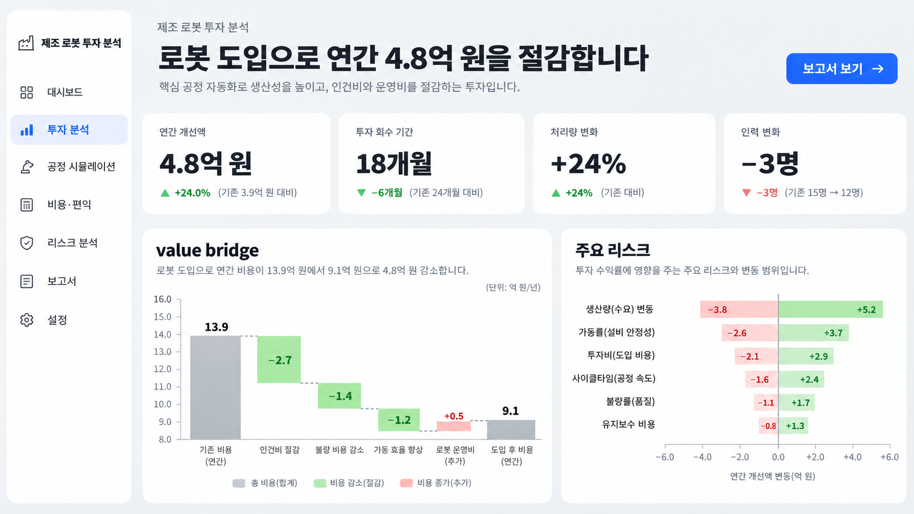

운영 시뮬레이션 랩
투자하기 전에,
시뮬레이션하라.
11 × N로봇 분석 1회당 조건 수 × 반복
9 / 9이론 검증 통과 · 최대 오차 0.5% 미만
8로봇 리스크 스트레스 요인
0 설치브라우저 병렬 워커로 실행

작동 방식
컨설턴트가 일하는 순서 그대로.
문제 정의부터 권고까지, 모든 결론은 표준(현재 운영) 대비 차이로 말합니다.
01
문제 정의
회사·산업, 문제 상황, 미션, 제약, 수요와 예산. 프리셋 5개 산업 케이스로 시작하거나, 실제 기업 데이터를 직접 입력하고 엑셀 표를 그대로 붙여넣습니다.
02
표준 라인 진단
공정별 사이클·변동·불량·고장을 반영한 1초 단위 시뮬레이션. 가공·막힘·고장·대기 시간 구성으로 병목이 어디인지 바로 보입니다.
03
설계와 실험
대수, 버퍼, 협동로봇·산업용 로봇, 자동 로딩 셀, AI 비전검사, IoT 예지보전을 조합하고 Monte Carlo·민감도·최적화 실험을 돌립니다.
04
표준 대비 결론
연간 순효과, 회수기간, 신뢰구간, 리스크 시나리오를 담은 1페이지 보고서로 정리합니다.
로봇 영향 분석
로봇의 이점만 계산하지 않습니다.
문제점도 같은 단위로.
대부분의 ROI 계산기는 공칭 성능만 가정합니다. Takt는 이론상 로봇과 실제 로봇(고장, 순간정지, 셋업, 램프업)을 따로 시뮬레이션해서, 효과가 어디서 오고 어디로 새는지 분해합니다.
이점
- +처리량 — 병목 공정의 사이클 단축으로 늘어나는 양품과 납기 달성률
- +인건비 — 공정별 투입 인력 변화를 교대 단위로 계산
- +품질 — 반복 정밀도로 줄어드는 불량 유출·클레임 비용
- +예측 가능성 — 산출 변동(표준편차) 감소, 리드타임 단축
문제점
- −정지 손실 — 로봇 고장과 순간정지로 사라지는 처리량
- −병목 이동 — 로봇이 병목을 풀면 드러나는 다음 제약
- −유연성 — 품종 교체가 잦을수록 긴 셋업이 효과를 잠식
- −도입 리스크 — 램프업, 정비 숙련도, SI 비용 초과, 안전 속도제한
가치 브리지 · 예시 구조
실험
한 번의 실행이 아니라, 분포로 판단합니다.
모든 실험은 CPU 코어 수만큼의 Web Worker에서 병렬로 돌고, 같은 난수 시드를 공유해 시나리오 차이가 우연이 아님을 보장합니다.
Monte Carlo
시나리오 비교
시나리오당 최대 2,000회. 평균·95% 신뢰구간·P5–P95, 목표 달성 교대 비율, 연간 효과와 회수기간. CSV로 내보내기.
민감도
민감도 분석
공정 대수, 버퍼, 품종 교체, 순간정지, 수리시간, SI 비용을 범위로 바꿔 KPI 곡선과 신뢰구간 밴드를 그립니다.
최적화
최적 투자 탐색
레버 조합 수천 개를 선별·재검증해 투자비 대비 연간 효과의 효율적 경계와 권고안을 찾습니다.
모델 가정
가정은 숨기지 않습니다.
- Model
- 1초 이산시간 흐름라인, 유한 버퍼, 가공 후 막힘(BAS)
- Variability
- 사이클 = 절단 정규분포(평균, CV)
- Failures
- 가동시간 기준 지수분포 MTBF / MTTR
- Robots
- 업체 공칭 성능 + 순간정지·셋업·램프업·정비 숙련도
- Quality
- 공정별 불량 발생, 검사 검출률, 유출 시 클레임
- Economics
- 공헌이익 − 미납 − 클레임 − 폐기 − 인건비 − 운영비